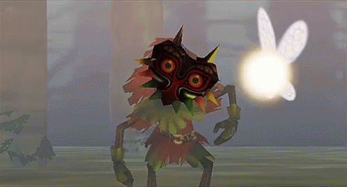

Bom dia, Boa tarde e Boa Noite para todos e principalmente para aquele o qual este site
foi feito e tem seu próprio repositório.
Aqui se encontrará em ordem:
-
Explicando um pouco do Jogo
- Seu inicio e informações.
-
Suas Versões
- Ports e Emulações
-
Sobre o que era pra ser
- N64DD e 2 disquetes de expansão
-
Curiosidades e Trivia
- Curiosidades
-
Opiniao
- O que eu acho do jogo
-
Fontes
- Informações sobre o Jogo
E o melhor, com minha profunda opinião, Então se ajeite e tire um tempo
para ler as falácias de alguém como eu.
Explicando um pouco do Jogo

The Legend of Zelda: Majora's Mask
é um jogo 3D de Ação e Aventura ambientado em lugar ficticio
conhecida como
Termina, lançado em 20 de Abril de 2000, lançado para Nintendo
64, uma Sequência
de seu antecessor, Ocarina of Time, no qual apresentava
gráficos melhorados,
mecanicas reaproveitadas e novas para a sua jogabilidade.
Sua história se passa cerca de 2 meses após os acontecimentos de
OoT no qual..Spoilers
Link, após retornar a ser uma criança, procura por Navi,
sua fada
Ele se depara com um Skull Kid utilizando a Majora's Mask, o mesmo é
acompanhado por
2 fadas, Talt e Tael, onde o mesmo rouba o cavalo de Link, e
Link persegue-o até
cair no mundo paralelo de Termina, onde Link se depara com o
vendedor a
qual a mascará o pertence e exige que Link a recupere em até 3
dias,
logo Link terá que fazer uma série de missões para que salve
Termina,
da ameaça de Skull Kid de jogar a Lua, em Termina.
O que era pra ser
No Anuncio do Nintendo 64, a empresa mostrou um acessorio no qual você acoplaria ao
console chamado de N64DD,
Este acessório permitia que o N64 usasse discos magneticos de 64MBs para
aumentar o armazenamento de dados
Tanto é que o Ocarina of Time era pra ser lançado como um titulo de lançamento
para o N64DD, entretanto,
foi para o cartucho por problemas de perfomance, com isso o jogo perdeu espaço,
mesmo sendo lançado como
cartucho, ele sofria queda de espaço indo de 64 para sua metade, causando muitas
vezes, texturas quebradas,
cut-scenes cortadas, inimigos, novidades, A Fonte do Unicornio(Lugar
provavelmente perto da Zora's Domain) e
2 dungeons (o Templo do Gelo e o do Vento).
Mesmo assim a Empresa que não mencionamos insistiu, para compensar pelo pouco espaço,
planejaram lançar 2 expansões de disquete para Ocarina
Uma chamada "Ura Zelda" e outra "Zelda Gaiden".
Não se sabe o que aconteceu com "Ura Zelda", embora é possivel encontrar sua logo na
tela de titulo e
seletor de save e poucos arquivos e codigos no cartucho do OoT.
Quanto ao "Zelda Gaiden", repensaram na ideia por ele ser muito similar ao seu
antecessor, com isso reutilizaram texturas melhoradas,
o uso do Expansion Pak e com isso seu nome final se tornou Majora's Mask, ou
como eu chamo a tech demo/beta de Zelda Gaiden.
Minha opinião
Olha, acho que é a primeira vez que penso em fazer uma opinião sobre ele, então vamos
lá
Majora's Mask é realmente um excelente jogo de Zelda, sua historia é bem construida,
não ficando atrelado a Zelda ou a Triforce o que é otimo, trazendo consigo um
novo vilão, lugar e transformações
e mecanicas que fazem o jogo realmente parecer novo comparado graficamente a seu
antecessor.
Formulando melhor a história penso bastante que a teoria do Link estar em um Limbo
que seria Termina muito boa, já que ele está em busca de algo que talvez nunca
ache, precisando lidar com isso e a muitos indícios
disso
Possui uma trilha sonora quase que é fenomenal tendo por ex: "Astral Observatory",
"Clock Town" com
suas variaçõe por dia, até mesmo a música de título é boa.
Mas mesmo com todas essas qualidades, ele ainda é confuso para alguem que inicia na
franquia ou que não entende muito bem suas mecanicas
No meu Ranking ele se encontra em 3º Lugar, mesmo eu particularmente não sendo fã
tanto dele quanto do OoT, ele tem meu merecido respeito.
"Wind Waker superior apenas" palavras de Gustavo The Deka